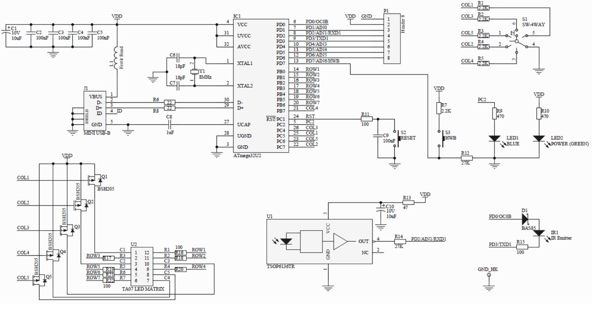

Kahu Hutton
Rock Paper Scissors Lizard Spock
2025. github.com/CARWHO/Paper-Scissors-Rock-Lizard-Spock

The Big Bang Theory version of rock-paper-scissors, running on an ATmega32U2. Built for an embedded systems course. Two players, three rounds, winner shown on LEDs.
Rules
- Scissors cuts Paper, decapitates Lizard
- Paper covers Rock, disproves Spock
- Rock crushes Scissors, crushes Lizard
- Lizard eats Paper, poisons Spock
- Spock vaporizes Rock, smashes Scissors
Hardware
- Custom PCB around an ATmega32U2.
- Five input buttons per player.
- LED display for score and winner.
- Debounced inputs, learned the hard way after ghost inputs ruined a demo.
Player 1 is always "you" from the board's perspective, and the LEDs show the P1 and P2 win states accordingly.
Back